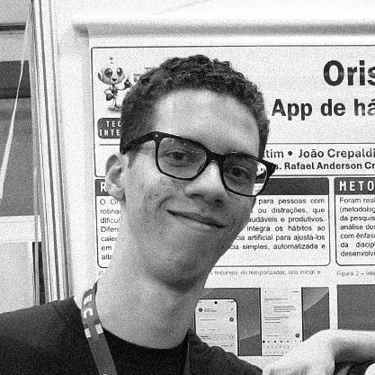

Nativo de IA, do rascunho ao ar.

Sou João Pedro Crepaldi, product designer e estudante de Análise e Desenvolvimento de Sistemas na ETEC Bento Quirino, em Campinas, SP. Desenho a experiência de um produto e sei levá-la até o ar.
O Denarius é a prova disso: um SaaS de governança de gasto com IA que criei sozinho, de ponta a ponta, em paralelo aos estudos. Antes, no Oris, meu TCC com dois colegas, cuidei da proposta de valor, da experiência, da interface e da marca. O OpenCourt e o Elo foram atividades da escola, em que fiquei com a marca e a direção visual.
Minha base em desenvolvimento me faz desenhar pensando no que é possível construir e facilita a conversa com quem desenvolve.
Nativo de IA
Aprendi a construir já com IA do lado. Ela gera código, telas, variações e demos; eu defino o problema, a estrutura e o que fica e o que sai. Sem IA, eu não teria feito metade do que está neste portfólio. Com ela, consigo fazer mais e mais rápido.
No Denarius, conduzi o desenvolvimento com agentes de IA de programação: prompts em fases, pontos de aprovação e auditoria de QA automatizada. A execução eu divido com a IA; o critério é meu. Por isso cada projeto diz o que fiz à mão e o que foi gerado.
Procurando
Estágio em UX/UI ou product design, em Campinas, híbrido ou remoto.
Em números
- 4produtos no ar: Denarius, Oris, OpenCourt e Elo
- 924contribuições no GitHub no último ano
Aprendendo agora
Fluxos de código com IA, arquitetura de software, design de produto e design de sistemas.
Ferramentas
Figma, Jitter, Claude Code, TypeScript, React, React Native, Next.js, Node.js e Java.
Idiomas
Português nativo e inglês profissional.
Certificações
Web Start, Criatividade e Inovação, Desenvolvendo em Node.js e Introdução a Node.js.
Contato
Para conversar sobre um projeto, escreva para joocrepaldi.pro@gmail.com.